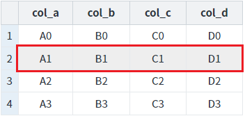
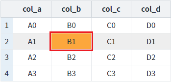
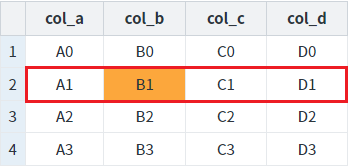
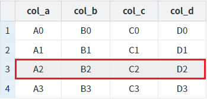
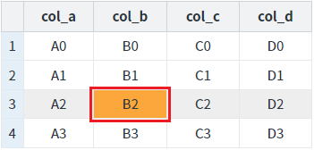
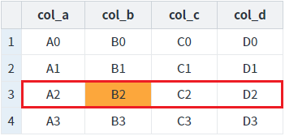
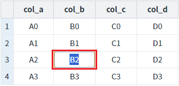

[GridView] readOnly(읽기 전용)를 스크립트로 적용하기 - 로우(행) 단위
1개요
GridView의 로우(행)에 'readOnly'(읽기 전용)를 함수로 설정하는 예제입니다. 'readOnly'가 'true'로 설정되면 셀이 수정 모드로 변경되지 않습니다.
사용할 수 있는 함수는 다음과 같습니다.
setRowReadOnly( rowIndex , readOnly ) : 로우 단위 설정
setReadOnly( type , rowIndex , colIndex , readOnlyFlag ) : 첫 번째 인자 'type'을 통해 셀, 컬럼, 로우, GridView 전체를 설정
GridView의 다른 함수를 통해 GridView 전체, 컬럼(Column), 셀(Cell) 단위로도 설정할 수 있습니다.
다음은 GridView의 'readOnly' 설정 관련 함수 목록입니다.
- setCellReadOnly( rowIndex , colIndex , readOnly ) : 셀 단위 설정
- setColumnReadOnly( colIndex , readOnly ) : 컬럼 단위 설정
- setColumnReadOnly( readOnly ) : GridView 전체 설정
- setReadOnly( type , rowIndex , colIndex , readOnlyFlag ) : 첫 번째 인자 'type'을 통해 셀, 컬럼, 로우, GridView 전체를 설정
- setRowReadOnly( rowIndex , readOnly ) : 로우 단위 설정
2구현된 기능
함수 'setRowReadOnly'를 사용하여 로우에 'readOnly' 설정하기
함수 'setReadOnly'를 사용하여 로우에 'readOnly' 설정하기
3예제 테스트 방법
3.1함수 'setRowReadOnly'를 사용하여 로우에 'readOnly' 설정하기
STEP 1. 초기 상태를 확인합니다.
모든 셀이 수정 가능하며 각 셀을 클릭하면 수정 모드로 변경됩니다. 'readOnly'가 설정된 셀의 배경색은 회색(#eee)로 설정되어 있습니다. 각 컬럼의 헤드에는 바디 컬럼의 ID가 표시됩니다.
그림 1.브라우저(Chrome) 실행 예시

STEP 2. 두 번째 로우에 'readOnly'를 적용합니다.
버튼 두 번째 로우에 'readOnly' 적용하기 - 함수 setRowReadOnly 사용을 클릭합니다.STEP 3. 실행된 결과를 확인합니다.
두 번째 로우에 'readOnly'가 적용되며 셀의 배경색은 회색(#eee)로 변경됩니다.
그림 2.브라우저(Chrome) 실행 예시 - GridVeiw

STEP 4. 셀을 클릭합니다.
두 번째 로우의 컬럼 'col_b' 셀을 클릭합니다.
STEP 5. 실행된 결과를 확인합니다.
선택된 셀의 배경색은 변경되지만 수정 모드로 변경되지 않습니다.
그림 3.브라우저(Chrome) 실행 예시 - GridVeiw

STEP 6. 두 번째 로우에 'readOnly'를 해제합니다.
버튼 두 번째 로우에 'readOnly' 해제하기 - 함수 setRowReadOnly 사용을 클릭합니다.STEP 7. 실행된 결과를 확인합니다.
두 번째 로우에 'readOnly'가 해제되며 셀의 배경색은 흰색(#fff)으로 변경됩니다. (기존에 선택된 셀의 배경색은 유지됩니다)
그림 4.브라우저(Chrome) 실행 예시 - GridVeiw

STEP 8. 셀을 클릭합니다.
두 번째 로우의 컬럼 'col_b' 셀을 클릭합니다.
STEP 9. 실행된 결과를 확인합니다.
셀이 수정 모드로 변경됩니다.
그림 5.브라우저(Chrome) 실행 예시 - GridVeiw

3.2함수 'setReadOnly'를 사용하여 로우에 'readOnly' 설정하기
STEP 1. 초기 상태를 확인합니다.
모든 셀이 수정 가능하며 각 셀을 클릭하면 수정 모드로 변경됩니다. 'readOnly'가 설정된 셀의 배경색은 회색(#eee)로 설정되어 있습니다. 각 컬럼의 헤드에는 바디 컬럼의 ID가 표시됩니다.
그림 6.브라우저(Chrome) 실행 예시
STEP 2. 세 번째 로우에 'readOnly'를 적용합니다.
버튼 세 번째 로우에 'readOnly' 적용하기 - 함수 setReadOnly 사용을 클릭합니다.STEP 3. 실행된 결과를 확인합니다.
세 번째 로우에 'readOnly'가 적용되며 셀의 배경색은 회색(#eee)로 변경됩니다.
그림 7.브라우저(Chrome) 실행 예시 - GridVeiw

STEP 4. 셀을 클릭합니다.
세 번째 로우의 컬럼 'col_b'의 셀을 클릭합니다.
STEP 5. 실행된 결과를 확인합니다.
선택된 셀의 배경색은 변경되지만 수정 모드로 변경되지 않습니다.
그림 8.브라우저(Chrome) 실행 예시 - GridVeiw

STEP 6. 세 번째 로우에 'readOnly'를 해제합니다.
버튼 세 번째 로우에 'readOnly' 해제하기 - 함수 setReadOnly 사용을 클릭합니다.STEP 7. 실행된 결과를 확인합니다.
세 번째 로우에 'readOnly'가 해제되며 셀의 배경색은 흰색(#fff)으로 변경됩니다. (기존에 선택된 셀의 배경색은 유지됩니다)
그림 9.브라우저(Chrome) 실행 예시 - GridVeiw

STEP 8. 셀을 클릭합니다.
세 번째 로우의 컬럼 'col_b'의 셀을 클릭합니다.
STEP 9. 실행된 결과를 확인합니다.
셀이 수정 모드로 변경됩니다.
그림 10.브라우저(Chrome) 실행 예시 - GridVeiw

4구현 예시
4.1함수 'setRowReadOnly'를 사용하여 로우에 'readOnly' 설정하기
GridView의 함수 'setRowReadOnly'를 이용하여 스크립트를 작성합니다. 세부 지정은 아래의 스크립트 예시에 작성되어 있습니다.
스크립트 - readOnly 적용하기
//예제 파일에서는 스크립트 scwin.btn_exam1_1_onclick에 작성되어 있습니다. // GridView 'grd_exam1'의 두 번째 로우에 'readOnly'를 적용합니다. grd_exam1.setRowReadOnly(1, true);
스크립트 - readOnly 해제하기
//예제 파일에서는 스크립트 scwin.btn_exam1_2_onclick에 작성되어 있습니다. // GridView 'grd_exam1'의 두 번째 로우에 'readOnly'를 해제합니다. grd_exam1.setRowReadOnly(1, false);
4.2함수 'setReadOnly'를 사용하여 로우에 'readOnly' 설정하기
GridView의 함수 'setReadOnly'를 이용하여 스크립트를 작성합니다. 세부 지정은 아래의 스크립트 예시에 작성되어 있습니다.
스크립트 - readOnly 적용하기
//예제 파일에서는 스크립트 scwin.btn_exam2_1_onclick에 작성되어 있습니다. // GridView 'grd_exam1'의 세 번째 로우에 'readOnly'를 적용합니다. grd_exam1.setReadOnly("row", 2, true);
스크립트 - readOnly 해제하기
//예제 파일에서는 스크립트 scwin.btn_exam2_2_onclick에 작성되어 있습니다. // GridView 'grd_exam1'의 세 번째 로우에 'readOnly'를 해제합니다. grd_exam1.setReadOnly("row", 2, false);
5주요 API
setRowReadOnly( rowIndex , readOnly )
setReadOnly( type , rowIndex , colIndex , readOnlyFlag )
6참고 문서
[웹스퀘어5 SP5 개발 가이드] GridView
링크 : https://docs1.inswave.com/sp5_user_guide/86bdcf48029b958b